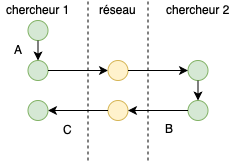

Science des données biologiques
Réalisé par le service d'Écologie numérique des Milieux aquatiques, Université de Mons (Belgique)Gestion de projet
Répondez aux questions ci-dessous
Analyse de situation
Situation 1
Deux chercheurs distants de plusieurs centaines de kilomètres, collaborent sur un projet commun. Ils ont pour cela décidé d’employer un outil de gestion de version et d’héberger ce projet sur un système d’hébergement web dédié pour cela.
Sur base de l’image ci-dessous et de la situation précisée précédemment, répondez aux questions suivantes.

Situation 2
Le chercheur 2 s’intéresse au projet du chercheur 1, travaille dessus et propose des modifications afin l’améliorer.
Sur base de l’image ci-dessous et de la situation précisée précédemment, répondez aux questions suivantes.

Situation 3
Le chercheur 2 vient d’intégrer le projet que le chercheur 1 réalisait seul. Il doit donc acquérir le dépot pour la première fois sur sa machine avant de pouvoir contribuer à ce projet.
Sur base de l’image ci-dessous et de la situation précisée précédemment, répondez aux questions suivantes.

Conclusion
Laissez nous vos impressions sur cet outil pédagogique ou expérimentez encore dans la zone ci-dessous. Rappelez-vous que pour placer un commentaire dans une zone de code R, vous devez utiliser un dièse (#) devant vos phrases.
# Ajout de commentaires
# ...